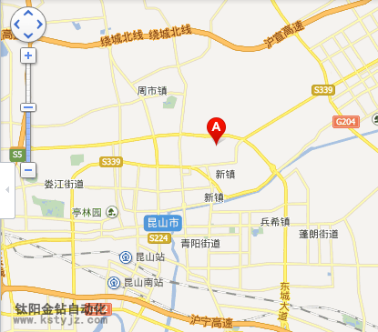
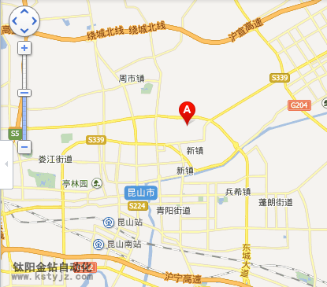

攻牙機攻牙的六大核心要點
文章出處：鈦陽金鑽責任編輯：kstyjz人氣：發表時間：2015-04-29 11:05
昆山鈦陽金鑽自動化設備有限公司，使用全自動攻牙機的要點：
a全自動攻牙機工件夾位置要正確，盡量使螺紋孔中心線置於水平或豎直位置，使攻牙容易判斷絲錐軸線是否垂直於工件的平面。工件上螺紋底孔的孔口要倒角，通孔螺紋兩端都倒角。
b在攻牙開始時，要盡量把絲錐放正，然後對絲錐加壓力並轉動絞手，當切入1-2圈時，仔細檢查和校正絲錐的位置。一般切入3-4圈螺紋時，絲錐位置應正確無誤。以後，只須轉動絞手，而不應再對絲錐加壓力，否則螺紋牙形將被損壞。
c攻牙時，絲錐與螺孔要保持同軸性。絲錐的校準部分不能全部出頭，否則在反車退出絲錐時會產生亂牙。每扳轉絞手1/2-1圈，就應倒轉約1/2圈，使切屑碎斷後容易排出，並可減少切削刃因粘屑而使絲錐軋住現象。攻不通的螺孔時，要經常退出絲錐，排除孔中的切屑。
d攻牙過程中換用後一支絲錐時，要用手先旋入已攻出和螺紋中，至不能再旋進時，然後用絞手扳轉。在末錐攻完退出時，也要避免快速轉動絞手，最好用手旋出，以保證已攻好的螺紋質量不受影響。
e攻塑性材料的螺孔時，要加潤滑冷卻液。對於鋼料，一般用機沒或濃度較大的乳化液要求較高的可用菜油或二硫化鉬等。對於不�袗�，可用30號機油或硫化油。
f全自動攻牙機的切削速度，一般鋼料為6-15米/分；調質鋼或較硬的鋼料為5-10米/分；不�袗�為2-7米/分；鑄鐵為8-10米/分。在同樣材料時，絲錐直徑小取較高值，絲錐直徑大取較低值。

昆山鈦陽金鑽自動化設備有限公司熱忱歡迎您的垂詢， 業務熱線 TEL-5516 0295
a全自動攻牙機工件夾位置要正確，盡量使螺紋孔中心線置於水平或豎直位置，使攻牙容易判斷絲錐軸線是否垂直於工件的平面。工件上螺紋底孔的孔口要倒角，通孔螺紋兩端都倒角。
b在攻牙開始時，要盡量把絲錐放正，然後對絲錐加壓力並轉動絞手，當切入1-2圈時，仔細檢查和校正絲錐的位置。一般切入3-4圈螺紋時，絲錐位置應正確無誤。以後，只須轉動絞手，而不應再對絲錐加壓力，否則螺紋牙形將被損壞。
c攻牙時，絲錐與螺孔要保持同軸性。絲錐的校準部分不能全部出頭，否則在反車退出絲錐時會產生亂牙。每扳轉絞手1/2-1圈，就應倒轉約1/2圈，使切屑碎斷後容易排出，並可減少切削刃因粘屑而使絲錐軋住現象。攻不通的螺孔時，要經常退出絲錐，排除孔中的切屑。
d攻牙過程中換用後一支絲錐時，要用手先旋入已攻出和螺紋中，至不能再旋進時，然後用絞手扳轉。在末錐攻完退出時，也要避免快速轉動絞手，最好用手旋出，以保證已攻好的螺紋質量不受影響。
e攻塑性材料的螺孔時，要加潤滑冷卻液。對於鋼料，一般用機沒或濃度較大的乳化液要求較高的可用菜油或二硫化鉬等。對於不�袗�，可用30號機油或硫化油。
f全自動攻牙機的切削速度，一般鋼料為6-15米/分；調質鋼或較硬的鋼料為5-10米/分；不�袗�為2-7米/分；鑄鐵為8-10米/分。在同樣材料時，絲錐直徑小取較高值，絲錐直徑大取較低值。

昆山鈦陽金鑽自動化設備有限公司熱忱歡迎您的垂詢， 業務熱線 TEL-5516 0295
上一篇：自動攻牙機加工質量的掌控要領---即，如何提高 | 下一篇：自動攻牙機常見五大難題的解決之道
相關資訊
- 攻牙機攻牙的六大核心要點'>攻牙機攻牙的六大核心要點
- 自動攻牙機常見五大難題的解決之道'>自動攻牙機常見五大難題的解決之道
- 自動攻牙機加工質量的掌控要領---即，如'>自動攻牙機加工質量的掌控要領---即，如
- 攻牙機使用的技巧大全'>攻牙機使用的技巧大全
- 問：攻牙機適合那些加工產品？'>問：攻牙機適合那些加工產品？
- 避免攻牙機操作事故的安全操作注意事項'>避免攻牙機操作事故的安全操作注意事項
- 攻牙機扭力夾頭.安全夾頭'>攻牙機扭力夾頭.安全夾頭
- 攻牙機技術在實踐應用當中的重要性'>攻牙機技術在實踐應用當中的重要性
- 鈦陽金鑽 產品加工實例'>鈦陽金鑽 產品加工實例
- 自動攻牙機可以提高生產數量和質量'>自動攻牙機可以提高生產數量和質量


推薦文章
- 攻牙機攻牙的六大核心
- 攻牙機零件的酸洗磷化
- 自動攻牙機加工質量的
- 近年來鑽孔攻牙行業的
- 轉盤式自動攻牙機、加
- 問：攻牙機適合那些加
- 鈦陽金鑽 產品加工實
- 何以自動攻牙機可以做
- 攻牙機（昆山鈦陽金鑽
- 自動攻牙機在加工時產